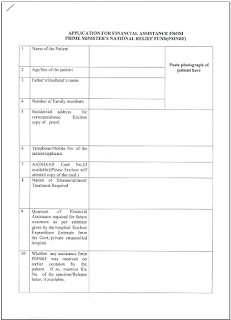
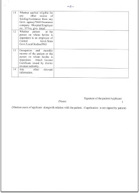

THE PRIME MINISTER RELIEF FUND: All you need to know
The Prime minister relief fund was initially started by the former prime minister Jawahar Lal Nehru in 1948 with public contributions to help the displaced people from Pakistan. The.The funds are now primarily utilized to render immediate relief to families of those killed in natural calamities like floods, cyclones and earthquakes, etc. and to the victims of the major accidents and riots. Assistance is also rendered, to partially defray the expenses for medical treatment like heart surgeries, kidney transplantation, cancer treatment, etc.
The fund consists entirely of public contributions and does not get any budgetary support. The corpus of the fund is invested with PSU banks in various forms. Disbursements are made with the approval of the Prime Minister. PMNRF has not been constituted by the Parliament. The fund is recognized as a Trust under the Income Tax Act and the same is managed by Prime Minister or multiple delegates for national causes. PMNRF operates from the Prime Minister’s Office, South Block, New Delhi-110011 and does not pays any license fee. PMNRF is exempt under Income Tax Act, 1961 under Section 10 and 139 for return purposes. Contributions towards PMNRF are notified for 100% deduction from taxable income under section 80(G) of the Income Tax Act, 1961. Prime Minister is the Chairman of PMNRF and is assisted by Officers/ Staff on honorary basis. Permanent Account Number of PMNRF is AACTP4637Q. PMNRF accepts only voluntary donations by individuals and institutions.
HOW TO APPLY:Cancer patients can apply to the PMRF for financial assistance. For that one needs to apply to the Prime minister office directly with the cost estimate given by the patient's doctor. It may be useful in getting the application endorsed by the local constituency MP or MLA. Generally partial assistance is given.


HOW TO DONATE:
Contributions to the Fund can be deposited in select branches of the Central Bank of India, State Bank of India, Bank of India, Indian Overseas Bank, Syndicate Bank and Punjab National ,through cheques or bank drafts in favour of the 'Prime Minister's National Relief Fund'. Receipt of the contribution will be acknowledged by the receiving bank, and the donation sent to the Fund account for deposit. Thereafter, a formal receipt for the contribution will be issued from the Prime Minister's National Relief Fund. All donors should ensure that the pay-in-slip is properly filled-in while making the deposit, to enable the Prime Minister's Office to issue the formal receipt. The Fund does not accept contributions in kind. Contributors who live outside India may deposit their contributions with the nearest Indian Mission or in any branch of the State Bank of India for transfer to the Prime Minister's National Relief Fund.
LIST OF HOSPITALS WHERE PRMF IS APPLICABLE:Delhi:
1.AIIMS HOSPITAL 2.INDRAPRASTHA APOLLO HOSPITAL, 3.BATRA HOSPITAL AND MEDICAL RESEARCH CENTRE, 4.DHARAMSHILA CANCER INSTITUTE AND RESEARCH CENTRE, 5.ESCORTS HEART INSTITUTE AND RESEARCH CENTRE, 6.G.B. PANT HOSPITAL, 7.MAULANA AZAD MEDICAL COLLEGE HOSPITAL, 8.NATIONAL HEART INSTITUTE, 9.RAJIV GANDHI CANCER INSTITUTE AND RESEARCH CENTRE, 10.DR. RAM MANOHAR LOHIA HOSPITAL, 11.SAFDARJUNG HOSPITAL, 12.SIR GANGA RAM HOSPITAL, 13.ST. STEPHEN HOSPITAL
Maharashtra:
1.ASHWINI CO-OPERATIVE HOSPITAL AND RESEARCH CENTR 2.ACHARYA VINOBA BHAVE RURAL HOSPITAL 3.BOMBAY HOSPITAL AND INSTITUTE OF MEDICAL SCIENCES 4.CENTRAL INDIA INSTT.OF MED. SCIENCE 5.PRAMILARAJE GENERAL HOSPITAL 6.DEEN DAYAL MEMORIAL HOSPITAL 7.NATIONAL HEART INSTITUTE, 8.GOVERMENT MEDICAL COLLEGE HOSPITAL 9.GRANT MEDICAL FOUNDATION, 10.INAMDAR HEART HOSPITALS, 11.JEHANGIR HOSPITAL AND MEDICAL CENTRE, 12.JASLOK HOSPITAL AND RESEARCH CENTRE, 13.DR. K.G. DESHPANDE MEMORIAL CENTRE, 14.LEELAWATI HOSPITAL AND RESEARCH CENTRE, 15.LOKMANYA TILAK GENERAL HOSPITAL, 16.MILITARY HOSPITAL 17.MARATHWADA MEDICAL AND RESEARCH INSTITUTE, 18.DR. BALABHAI NANAWATI HOSPITAL 19.MUMBAI TATA MEMORIAL RURAL CANCER PROJECT 20.N.M. WADIA INSTITUTE OF CARDIOLOGY 21.PD HINDUJA NATIONAL HOSPITAL AND MEDICAL RESEARCH CENTRE
For more hospitals see below:Click here
Sources:
http://www.cancerhelpnet.in/resources-for-patients http://www.archive.india.gov.in/howdo/otherservice_details.php?service=11 Thanks for reading and please keep visiting our blog to discover and appreciate more Yoddhas.
02 Comments